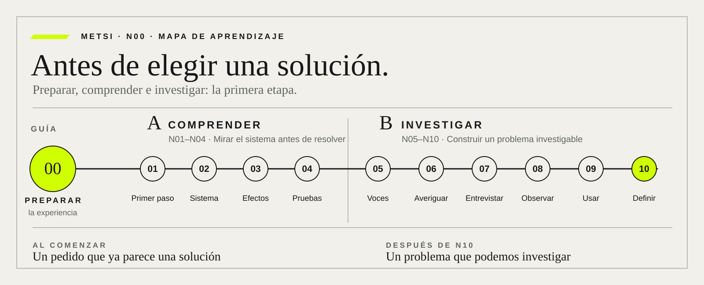

Lo que vas aprendiendo a hacer.
El recorrido va de entender qué está pasando a mejorar cómo se trabaja, comprobar si el cambio sirve y aprender de los resultados.
Preparamos el recorrido: cómo vamos a aprender y cuál es el hotel que usaremos como ejemplo.

Lectura a lectura.
El mapa muestra el movimiento general; acá podés ver qué aporta cada documento. Elegí una estación. Para la versión impresa, las dos primeras aparecen juntas.
Preparar el recorrido
N00 es la guía, no una lectura más de la colección.
- N00
Antes de empezar
Preparamos el recorrido: cómo vamos a aprender y cuál es el hotel que usaremos como ejemplo.
Comprender
Primero entendemos qué está pasando y qué puede salir mal si resolvemos demasiado rápido.
- N01
Intervenir sin recetas
Antes de salir a resolver, aprendemos a hacer buenas preguntas y elegir un primer paso que tenga sentido.
- N02
Mirar el sistema completo
Ampliamos la mirada: para entender un problema hay que mirar a las personas, las tareas y las herramientas que usan.
- N03
Ver las consecuencias
Vemos cómo una mejora en un lugar puede crear un problema en otro. Aprendemos a mirar esas consecuencias antes de avanzar.
- N04
Separar pruebas de supuestos
Separamos lo que sabemos de lo que suponemos y de lo que nos contaron. Buscamos pruebas para decidir mejor.
Investigar
Escuchamos y observamos antes de decidir qué problema conviene resolver.
- N05
Escuchar las voces
Escuchamos a quienes deciden, hacen el trabajo y reciben sus consecuencias. Sus opiniones pueden cambiar lo que proponemos.
- N06
Elegir qué averiguar
Elegimos qué necesitamos averiguar antes de comprometernos con una solución. Investigamos lo que puede cambiar nuestra decisión.
- N07
Preguntar sin inducir
Aprendemos a preguntar sin llevar a la otra persona hacia la respuesta que queremos escuchar.
- N08
Observar el trabajo real
Observamos cómo se trabaja de verdad, incluidos los pequeños arreglos que no aparecen en los manuales ni en las pantallas.
- N09
Seguir la experiencia de uso
Nos ponemos en el lugar de quien usa el servicio. Buscamos que pueda completar lo que necesita, aunque tenga dificultades o necesite ayuda.
- N10
Definir el problema
Con todo lo aprendido, definimos cuál es el problema que vale la pena resolver y cómo reconoceremos una mejora.
01Maqueta de dirección de arte: aún no se incorpora al N00 publicado ni modifica el recorrido actual de la página.